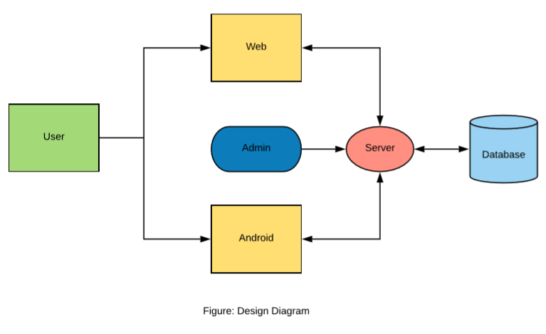

2. Architectural Pattern
2.1 Approach
The approach we have picked for this piece of software is the Waterfall Model where there are some steps like requirement analysis, design and implementation, unit testing and maintenance.
2.2 Diagram of the Approach
2.3 Design

2.4 Design Pattern
For this project we have selected MVC framework which is Model-View-Controller framework. The reason behind picking this one is, MVC architecture allows application logic to be separated from user interface.
a.Model controls the data flow and the behaviour of the system. It handles request for the information and respond to it.
b.View works with the user interface.
c.After receiving the user input from the controller it makes call to the model object.